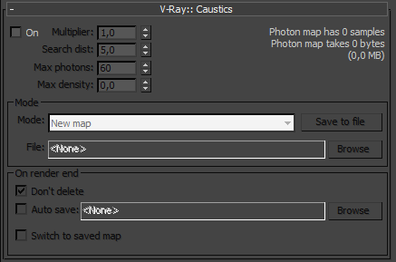
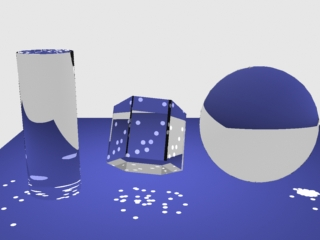
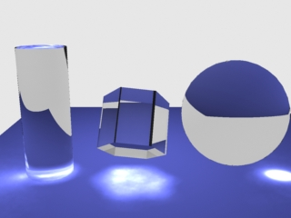
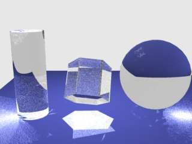
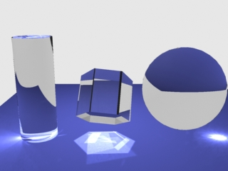

Caustics
Caustics Overview
V-Ray supports the rendering of caustics effects. In order to produce this effect, you must have proper caustics generators and caustics receivers in the scene (for information how to make an object a caustics generator/receiver, see the Object/Light settings). The settings in this parameter section control the generation of the photon map (an explanation of the photon map can be found in the Terminology section).
In order to calculate the caustics effects, V-Ray uses a technique known as photon mapping. It is a two-pass technique. The first pass consists of shooting particles (photons) from the light sources in the scene, tracing them as they bounce around the scene, and recording the places where the photons hit the object surfaces. The second pass is the final rendering, which is when the caustics are calculated by using density estimation techniques on the photon hits stored during the first pass.
Caustics Parameters
 On - turns rendering of caustics on and off.
Multiplier - this multiplier controls the strength of the caustics. It is global and applies to all light sources that generate caustics. If you want different multipliers for the different light sources, then you should use the local light settings. Note: this multiplier is cumulative with the multipliers in the local light settings.
Search distance - when V-Ray needs to render the caustics effect at a given surface point, it searches for a number photons on that surface in the area surrounding the shaded point (search area). The search area in fact is a circle with center the original photon and its radius is equal to the Search distance value. Smaller values produce sharper, but perhaps more noisy caustics; larger values produce smoother, but blurrier caustics.
Example: The Search Distance Parameter
For this image, the Caustics subdivs parameter for the light is set to 50, so that the separate photons are more distinct; the global caustics Multiplier is 17000, and the Max photons are set to 60. As can be seen, the larger search distance produces blurrier caustics.

Search dist = 1

Search dist = 10
Example: The Light Caustics Subdivs Parameter
This example is similar to the previous one, but the Caustics subdivs parameter for the light is increased to 300. The other parameters are the same as in the previous example. As can be seen, the larger number of photons produces smoother caustics effects than in the previous example.
Search dist = 1

Search dist = 5
Max photons - this is the maximum number of photons that will be considered when rendering the caustics effect on a surface. Smaller values cause fewer photons to be used and the caustics will be sharper, but noisier. Larger values produce smoother, but blurrier caustics. The special value of 0 means that V-Ray will use all the photons that it can find inside the search area.
Example: The Max Photons Parameter
For this example, the Caustics subdivs parameter for the light was set to 4,000, the global caustics Multiplier to 17,000, and the Search distance to 0.5. As can be seen, the larger value of the Max photons parameter in the second image causes the caustics to appear much smoother.

Max photons = 1

Max photons = 60
Max density - this parameter allows you to limit the resolution (and thus the memory) of the caustics photon map. Whenever V-Ray needs to store a new photon in the caustics photon map, it will first check if there are any other photons within a distance specified by Max density. If there is already a suitable photon in the map, V-Ray will just add the energy of the new photon to the one in the map. Otherwise, V-Ray will store the new photon in the photon map. Using this options allows you to shoot many photons (and thus get smoother results) while keeping the size of the caustics photon map manageable.
Mode
Mode - controls the mode of the irradiance map:
-
New map - when this option is selected, a new photon map will be generated. It will overwrite any previous photon maps left over from previous rendering.
-
Save to file - hit this button if you want to save an already generated photon map in a file.
-
From file - when you enable this option, V-Ray will not compute the photon map but will load it from a file. Hit the Browse button on the right to specify the file name.
File
- the file name with the caustics photon map to be loaded when the Mode is set to From file.
On Render End
Don't delete
- when checked, V-Ray will keep the photon map in memory after the scene has finished rendering. Otherwise, the map will be deleted, so that the memory it takes up will be freed. This option can be especially useful if you want to compute the photon map for a particular scene only once and then reuse it for further rendering.
Auto save - when this is turned on, V-Ray will automatically save the caustics photon map to the provided file when rendering is complete.
Switch to saved map - this option is only available if Auto save is on. It will cause V-Ray to automatically set the Mode to From file with the file name of the newly saved map.